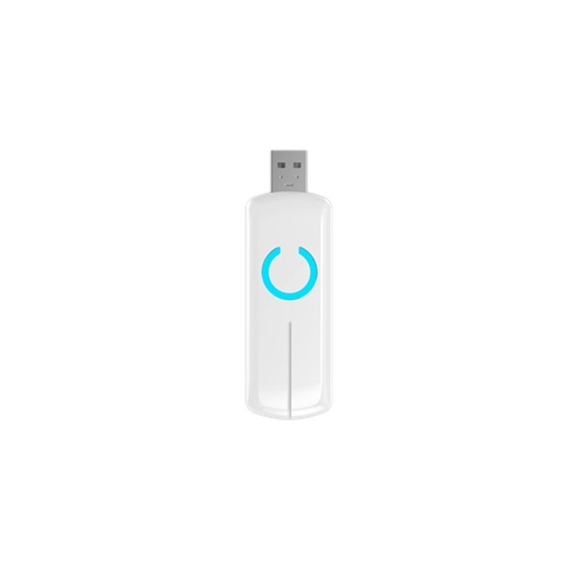
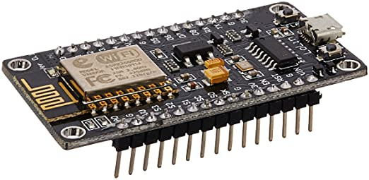
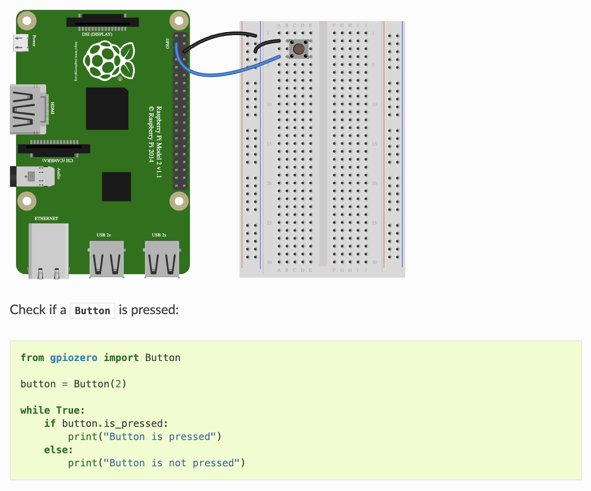
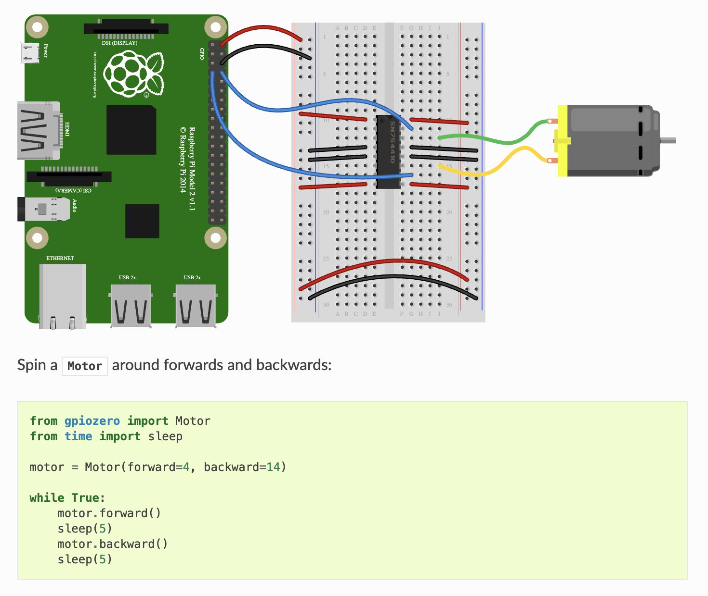
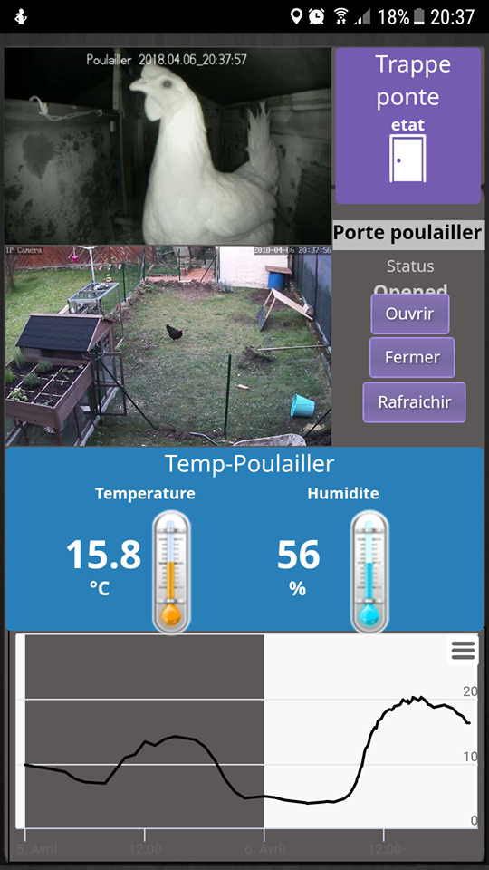
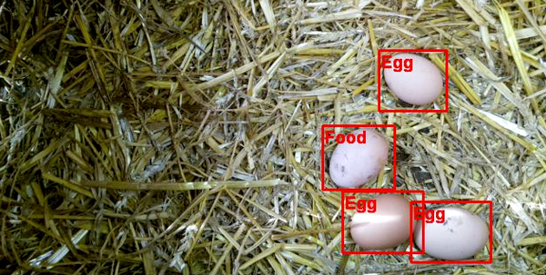
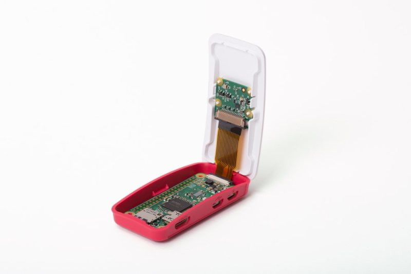

# Présentation du projet Domopoules <img src="../hardware/IMG_20200727_080342.jpg" height="250" alt="Poules sortant"> Présentation réalisé avec Remark.js pour le Dev and Test Day 2020 (Orange) Appuyez sur P pour voir les notes. Puis C pour cloner l'affichage. ??? Présentation qui durera 20 minutes Comme tout le monde j'ai pris des poules pendant le confinement --- ## Introduction Les poules, parfait pour occuper les enfants pendant le confinement. <img src="./resources/enfant_poules.jpg" height="300" alt="Albin avec une poule dans les bras"> ??? Mais pas mal de contraintes, dont ouvrir et fermer la porte matin et soir --- ## Introduction - 2 Le poulailler le lieu parfait pour innover en domotique. Le WAF est très bon. __Premier objectif : ouvrir automatiquement la porte du poulailler__ Objectifs suivants : présence des poules en intérieur, nombre d'oeufs. ??? Pratique de la domotique dans la maison depuis qques années. --- ## Agenda 1. Présentation de centrale domotique sous Jeedom 2. Le problème de la portée 3. Le coeur du système, le raspberry pi zero WH 4. La couche logicielle 5. La solution technique 6. Le problème de l'alimentation 7. Pour aller plus loin --- ## Des solutions éxistent sur le marché <img src="./resources/chickenguard.jpg" height="80%" alt="Vue écrans Jeedom"> ??? Ici chickenguard Mais cher(140€), pas domotisé, pas adapté à ma cabane. --- ## Présentation de Jeedom <img src="./resources/jeedom_overview.jpg" width="100%" alt="Vue écrans Jeedom"> Open source. Français (Lyon). ??? S'installe sur un raspberry pi (3 ou 4 pas zero) Système très ouvert : compatible zwave, philips Hue, ikea..., google smarthome, alexa... --- ## Présentation de Jeedom - 2 - les plugins <img src="./schema/jeedom_and_plugins.png" width="100%" alt="Vue écrans Jeedom"> ??? possibilité de réutiliser périphériques homelive possibilité de changer de technologie --- ## Présentation de Jeedom - 3 - Business model <img src="./resources/logo_jeedom.png" width="10%" alt="Vue écrans Jeedom"> Vente de: - boxes sur étagère - plugins - service de sauvegarde, de SMS, de noms de domaine ??? testé également domoticz Au final une bonne solution stable évolutive peu couteuse --- ## Le problème de la portée <img src="./resources/jardin_vue_helico.png" width="100%" alt="La maison et le poulailler sur la gauche"> Le poulailler est à 30 mètres de la box domotique - zigbee ==> KO - z-wave ==> MOUAIS - Wi-Fi ==> OK --- ## Le problème de la portée - 2 - Rappel réseaux maillé <img src="./resources/z-wave_avec_routage.png" width="100%" alt="réseau maillé"> ??? zwave réseau maillé qui se reconfigure --- ## Le problème de la portée - 3 - Mais est-ce lié au protocole  ??? --- ## Le problème de la portée - 4 - Mais est-ce lié au protocole Probablement plus au hardware <img src="./resources/synology_rt2600ac.jpg" width="60%" alt="Un vrai routeur Wi-Fi"> ??? Quoi qu'il en soit ce sera du Wi-Fi --- ## Le coeur du système - solutions abandonnées  Node MCU ESP 8266 ==> un arduino avec du Wi-Fi ??? trop bas niveau pour moi, trop lourd à mettre à jour. --- ## Le coeur du système - 2 - Raspberry pi zero WH <img src="./resources/raspberry_family.jpg" width="50%" alt="Vue écrans Jeedom"> Photo de famille : 0 / 1 / 2 / 3 / 4 --- ## Le coeur du système - 3 - Raspberry pi zero WH <https://www.kubii.fr/cartes-raspberry-pi/2076-raspberry-pi-zero-wh-kubii-3272496009394.html> ??? Le raspberry pi zero + W ==> du Wi-Fi + H ==> connecteur GPIO soudé Pour ceux qui galèrent avec les arduino / ESP TODO Un vrai linux accessible en SSH, un vrai IDE direct dessus (Vim), Git... On peut écrire directement en python Pas cher : 10-15€, mais il faut y ajouter la carte SD --- ## La couche logicielle - Présentation de Rpi.GPIO <https://pypi.org/project/RPi.GPIO/> ??? Date de 2012 --- ## La couche logicielle - 2 - présentation de gpiozero <https://gpiozero.readthedocs.io/en/stable/recipes.html>  --- ## La couche logicielle - 3 - présentation de gpiozero - 2  --- ## La solution technique <img src="../hardware/IMG_20200723_000108_recadre.jpg" width="700" alt="vue montage"> ???? --- ## La solution technique - 2 Pont en H L298N <img src="./resources/L298N.jpeg" width="700" alt="clé usb zwave"> ???? Réagir à un ordre de faible puissance envoyé par le raspberry pi en envoyant du courant de plus forte puissance. Coût 5€ --- ## La solution technique - 2 Code (simplifié) ```python from gpiozero import Motor from gpiozero import Button import time motor = Motor(forward=17, backward=22) button = Button(2) def open_door(): motor.forward() time.sleep(69) motor.stop() def close_door(): time_spent=0 motor.backward() while not button.is_pressed and time_spent<99: time.sleep(1) time_spent+=1 motor.stop() ``` ??? Code appellé en SSH via le plugin script de Jeedom --- ## La solution technique - 2 Code (simplifié) ```python import RPi.GPIO as gpio import datetime import time import logging TIME_CLOSE = 100 TIME_OPEN = 83 def init(): gpio.setmode(gpio.BCM) gpio.setup(17, gpio.OUT) gpio.setup(22, gpio.OUT) def open_door(): gpio.output(17, True) gpio.output(22, False) time.sleep(TIME_CLOSE) gpio.cleanup() def close_door(): gpio.output(17, False) gpio.output(22, True) time.sleep(TIME_OPEN) gpio.cleanup() ``` --- ## Le problème de l'alimentation Naivement je pensais que le raspberry pi zero ne consommerait rien et tiendrait qques semaines sur une batterie USB... Que Neni Consommation : Raspberry pi zero WH : 90mah L298 : 6mAh (si VEN = LOW), 24mAh sinon. 104mah pour une batterie de 7Ah ===> 3 jours --- ## Le problème de l'alimentation - solution solaire <img src="../hardware/IMG_20200724_181459.jpg" width="60%" alt="solution solaire"> ??? cout | Article | tarif | ref | |---------------------------|-------|-------------------------------------------------------------------------------------------------------------| | Controleur de charge | 14€ | <https://www.amazon.fr/gp/product/B071ZZ2S84> | | panneau solaire 12 v 10 w | 22€ | <https://www.amazon.fr/gp/product/B00TYDIMJU> | | batterie 12V 7Ah | 19€ | <https://www.amazon.fr/gp/product/B009D0KFOO> | --- ## Coût final | Article | tarif | |---------------------------|-------| | pont en H | 5€ | | raspberry pi zero W | 11€ | | moteur 12 V à engrenage | 17€ | | boitier electrique | 14€ | | Controleur de charge | 14€ | | panneau solaire 12 v 10 w | 22€ | | batterie 12V 7Ah | 19€ | | TOTAL | 102 | --- ## Pour aller plus loin - surveillance vidéo   ??? Etape suivante naturelle dans la domotisation : la vidéo surveillance Permettre : - surveillance poules - détection ponte Là encore le raspberry pi zero peut aider. --- ## Pour aller plus loin - 2 - raspberry zero WH <img src="./resources/Pi-Zero-W-details.jpg" width="600" alt="ports"> --- ## Pour aller plus loin - 3 - raspberry zero WH  ??? --- ## Pour aller plus loin - 4 - Motion eye OS <https://github.com/ccrisan/motioneyeos> <img src="./resources/motioneyeos.ico" width="100" alt="clé usb zwave"> <img src="./resources/motioneye_mobile.png" width="100" alt="clé usb zwave"> --- ## Pour aller plus loin <https://www.framboise314.fr/un-poulailler-connecte-avec-un-raspberry-pi/>